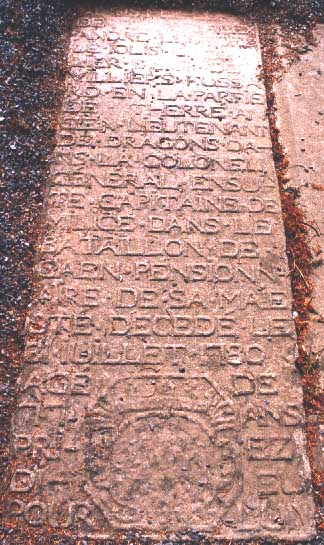

|
| |
|
retour au Sommaire Abbé Debrix |
La suite ... |
Guillaume le Jolis qui, vers 1596, épousa Marie du Bouillon et vint, dans la suite, de Brucheville, en Cotentin, habiter la Ponterie, avait été anobli en 1595, " en récompense d'importants services rendus à l'Etat. " Les actes où il paraît le signalent comme " seigneur du Jonquay et de la Ponterie, sieur de Villiers, officier des Archers du Roi Henri IV ".
Il eut deux fils : Jean, dont la postérité s'éteignit en 1780, et Alexandre. Ce dernier, comme son père, seigneur du Jonquay et de la Ponterie, épousa en 1627 noble damoiselle Françoise Alexandre, qui lui donna quatre fils (18) et deux filles.
L'aîné de cette famille, Jean, seigneur du Jonquay et de la Ponterie (1633-1707), s'unit, en 1655, à noble damoiselle Suzanne d'Escajeu de la Ramée et fit les campagnes de 1667 et 1668 comme volontaire dans la compagnie de M. de Chamilly.
Son unique héritier, François-Alexandre, né en 1663, prit le titre de seigneur de Villiers. Il servit d'abord au régiment Morsan-Dragons, puis il fut capitaine de cavalerie dans celui de Fourqueveaux et fut tué, le 13 août 1704, à la bataille d'Hoeschstedt. Louis XIV, pour récompenser ses services et indemniser ses dépenses, versa aux huit enfants qu'il avait eus depuis 1693 avec noble damoiselle Louise de Prye une pensions annuelle de 1.800 livres.
| Trois d'entre eux furent officiers : Louis-Marc, au régiment de Bretagne ; Jacques, dans la cavalerie, et Alexandre-Léonor (1702-1780). Ce dernier, seigneur de Villiers en la partie de Therré, se maria en 1756 à noble damoiselle Mathurine Germain de la Conté, qui lui donna deux fils et trois filles. Sa pierre tombale, au pied de la croix du cimetière, rappelle qu'il fut successivement lieutenant de dragons, capitaine de milice dans la bataillon de Caen et pensionnaire de Sa Majesté. |  |
Ses deux fils servirent aussi dans
l'armée. Le second, Prosper-Mathurin, mourut à dix-huit
ans, en 1782, à Béziers, officier du Régiment du
Maine-Infanterie. L'aîné,
François-Alexandre-Léonor, né en 1760, fut
élevé aux Ecoles Royales de La Flèche et de
Paris. Il en sortit en 1776 pour être cadet-gentilhomme dans le
régiment de Vermandois où il fut officier de 1777
à 1788. En 1801, 1802, 1803, il fut successive ment maire de
Saint-Lô, conseiller de Préfecture et membre du
collège électoral de la Manche. Il mourut en 1845. De
son union, célébrée en 1787, avec noble
damoiselle Marie-Anne de Géraldin, il eut six enfants.
Le troisième, Edouard (1803-1855), hérita de la
Ponterie. Elle passa ensuite à son fils Prosper, qui la vendit
à la fin du XIXe siècle. " Prosper de Villiers,
écrit M. l'abbé Catherine, était un homme fort
disert, avocat par ses études, inscrit au barreau de
Saint-Lô, mais sans avoir exercé. Il parlait une dizaine
de langues. Sa connaissance de l'arabe, en particu-lier, lui avait
valu un séjour assez notable en Palestine sous le Second
Empire... Après la vente de la Ponterie, M. de Villiers devint
juge de paix à Sizun (Finistère). Il y rendait la
justice en bas-breton, quand il le jugeait utile, à la grande
joie de ses clients dispensés de graisser la patte au greffier
".
Prosper de Villiers eut enfants et petits-enfants. M. le chanoine Soudée, mort doyen de Percy, qui présida l'installation de M. l'abbé Chesnel en 1928, était l'un de ses neveux.
Le blason des Le Jolis se lit : d'azur au chevron d'or accompagné de trois aigles éployés de sable, deux en chef et un en pointe.
La commune peut être fière d'avoir vu naître à la Ponterie, pendant près de deux siècles, de nombreux rejetons d'une noble famille empressés à servir la France.
|
| |
|
retour au Sommaire Abbé Debrix |
La suite ... |